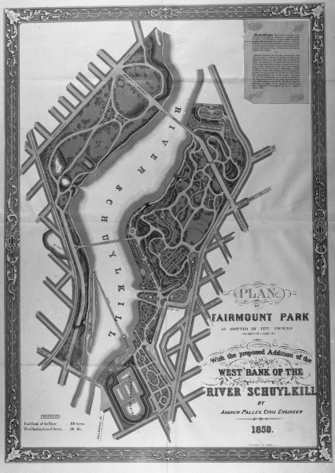

How Did Philadelphia’s Park System Evolve Over 300 Years?
Introduction
Philadelphia's park system began with William Penn, the founder of Pennsylvania, who envisioned the city as a "greene country towne" with ample public green space.
In the original 1682 city plan, Penn designated five public squares—Rittenhouse, Logan, Franklin, Washington, and Centre Squares—as public open spaces for residents. These squares laid the foundation for what would later grow into a comprehensive park system.
Colonial Beginnings (1680s-1800s)
Philadelphia's park system began with William Penn, the founder of Pennsylvania, who envisioned the city as a "greene country towne" with ample public green space.
In the original 1682 city plan, Penn designated five public squares—Rittenhouse, Logan, Franklin, Washington, and Centre Squares—as public open spaces for residents. These squares laid the foundation for what would later grow into a comprehensive park system.
Fairmount Park and Water Protection (Early to Mid-19th Century)
The development of Fairmount Park, one of the nation's largest urban parks, was central to the history of Philadelphia's park system. The city’s reliance on the Schuylkill River for drinking water prompted leaders to prioritize the protection of the watershed from industrial pollution. In 1812, the Fairmount Water Works was constructed to provide the city with clean water, leading to the acquisition of land along the river to preserve water quality. This led to the formal establishment of Fairmount Park in 1855.
Fairmount Park rapidly expanded during the mid-19th century, particularly following the city’s consolidation in 1854, which brought new areas under municipal control. The park grew as lands along the Schuylkill River were purchased to prevent pollution and protect the city’s water supply, a dual purpose of conservation and recreation.

Post-Civil War Expansion (Late 19th Century)
After the Civil War, Fairmount Park became a major site for recreational and cultural activities. Memorial Hall and the Centennial Exposition of 1876 were hosted within the park to commemorate the 100th anniversary of the United States. This event attracted attention to the need for more extensive public parks and recreation facilities in Philadelphia.
In the following decades, more land was added to the park system, including Wissahickon Valley Park, which brought wooded areas, trails, and natural beauty into the city. Other notable parks were added, including FDR Park in South Philadelphia.
Parkway and Civic Beautification (Early 20th Century)
The early 20th century saw a push for urban beautification and civic improvement in Philadelphia, largely driven by the City Beautiful Movement. A key project was the development of the Benjamin Franklin Parkway, which opened in 1918. This grand boulevard connected the city center with Fairmount Park and was envisioned as a cultural corridor, lined with institutions such as the Philadelphia Museum of Art and Logan Square.
This period also saw the rise of playgrounds, small parks, and recreational facilities, especially in urban neighborhoods, as concerns about public health and urban density grew. The Wissahickon and Cobbs Creek parks, alongside the Benjamin Franklin Parkway, illustrated the city's commitment to both large and small green spaces.
Mid to Late 20th Century: Preservation and Recreation
By the mid-20th century, there was increased emphasis on park maintenance, recreational programming, and public access. In 1951, the Fairmount Park Commission was formalized, overseeing the administration and care of the parks. The development of neighborhood recreation centers and smaller parks in underserved areas became a priority, aiming to provide equitable access to green spaces for all Philadelphians.
21st Century: Modernization and Green Spaces for All
The modern era of Philadelphia's park system has focused on revitalization, environmental sustainability, and community engagement. In 2010, the Philadelphia Parks & Recreation Department was created through a merger of the Fairmount Park Commission and the Department of Recreation. This reorganization aimed to improve efficiency and better manage the city’s vast network of parks, playgrounds, and recreation centers.
In recent years, initiatives like the Rebuild Program have focused on restoring and updating parks, recreation centers, and libraries across the city, particularly in underserved communities. The city has also pursued green initiatives like the creation of Green2015, which aimed to add 500 acres of public green space by 2015. Modern projects, such as Schuylkill Banks and Dilworth Park, reflect a continued commitment to integrating green spaces into the urban environment.